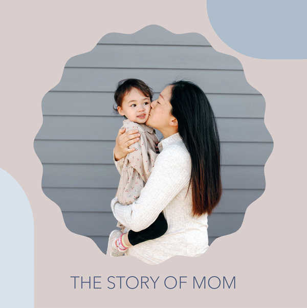
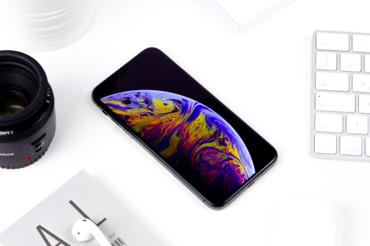

Finding Balance: A Mom's Journey in the Tech World
Asmaa Hamdy
September 28, 2024

As a mom, I've always been driven by a desire to balance my personal and professional life
Being a mom and a tech professional can feel like juggling multiple balls in the air. There are
endless
demands on your
time, energy, and attention. But amidst the chaos, there's also a unique sense of fulfillment and
purpose.
A woman who doesn't know her own power is a force to be reckoned with.
As a mom in the tech industry, I've faced my fair share of challenges. Long hours, demanding projects,
and the constant
pressure to stay ahead of the curve can be overwhelming. But I've also discovered the incredible
benefits of combining
motherhood with a career in tech.
The Rewards of Tech and Motherhood
Flexibility: Many tech jobs offer flexible work arrangements, making it easier to balance work and
family
responsibilities.
Intellectual Stimulation: A career in tech can provide a stimulating and challenging environment,
helping to keep your
mind sharp and engaged.
Role Model: Being a successful tech professional can inspire your children and show them the
possibilities that can be
achieved with hard work and dedication.
Financial Security: A career in tech can provide a stable income, helping to ensure a secure future for
your family.
Finding Balance
Despite the rewards, finding balance between motherhood and a tech career can be a constant struggle.
Here are some tips
that have helped me:
Set Boundaries: It's important to establish clear boundaries between work and family time. This means
turning off your
phone and computer when you're with your kids and avoiding work-related tasks during family time.
Prioritize: Learn to prioritize your tasks and focus on what's most important. Don't be afraid to
delegate or say no if
you're feeling overwhelmed.
Self-Care: Make time for self-care activities, such as exercise, meditation, or hobbies. Taking care of
yourself will
help you be a better mom and a more productive professional.
Support System: Build a strong support system of friends, family, or other moms in the tech industry.
Having people you
can rely on can make a big difference.

Tech can be demaning somtimes!.
Being a mom in the tech world is a challenging but rewarding journey. By finding balance and embracing
the unique
opportunities that this combination offers, you can create a fulfilling and successful life for yourself
and your
family.
Sources and related content